AnyPortrait > マニュアル > 「Look At」IKコントローラー
IKチェーンを動かす「IKコントローラー」には、「Position」と「Look At」の2種類があります。
そのうち、「Look At」タイプのIKコントローラーが「AnyPortrait v1.7.0」で大幅に改善されました。
動作方式の変更に伴い、様々なオプションが追加されています。
このページでは、改善された「Look At IKコントローラー」について解説します。
手続き的に行われる演算プロセスに基づき、各段階に対応するオプションを説明します。
また、特殊なケースについても併せて説明します。
IKコントローラーについては、まず以下のマニュアルをお読みいただくことをお勧めします。
- IK設定
- IKコントローラ
詳しい説明の前に、「Look At」方式の「IKコントローラー」を設定する方法を改めて確認しましょう。
メッシュグループにボーンが追加され、「IKチェーン」が設定されている状態を前提に説明します。
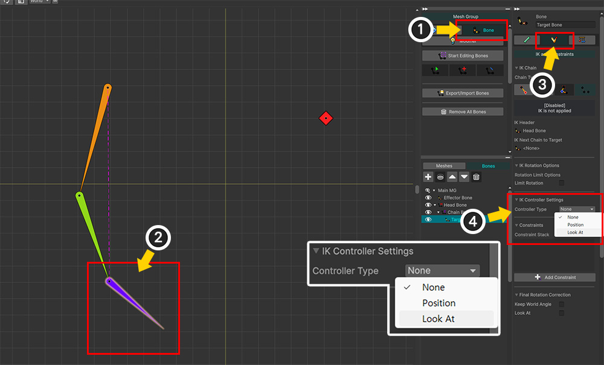
(1) 「Bone」タブを選択します。
(2) IKを適用したいボーンを選択します。
(3) 右側のUIにある「IK and Constraints」タブを選択します。
(4) 「IK Controller Settings」項目の「Controller Type」オプションの値を変更することで、「IKコントローラー」を適用できます。
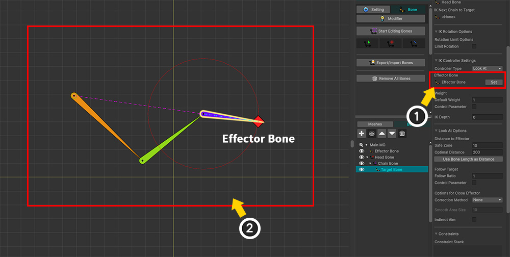
(1) IKの対象となる「Effector Bone」を設定します。
(2) IKコントローラーが適用されるのが確認できます。
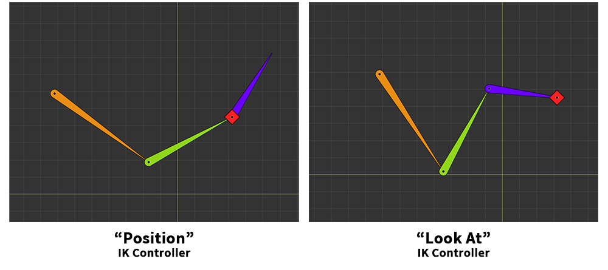
IKコントローラーのタイプによって、ボーンが「Effector Bone」に追従する挙動が異なります。
「Position」タイプの場合、ボーンの位置が「Effector Bone」と一致するように移動します。
「Look At」タイプの場合、ボーンは「Effector Bone」の近くまで移動した後、その先端が「Effector Bone」を向くように回転します。
改良された「Look At」は位置に基づいて動作し、大きく分けて3段階の演算プロセスを経ます。
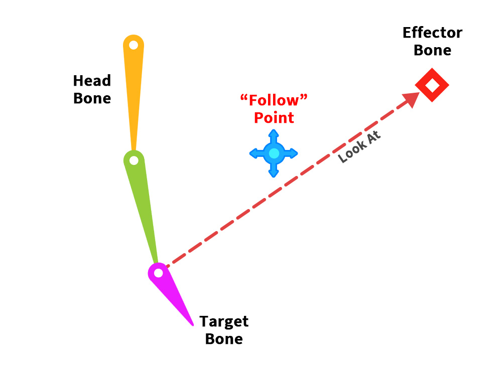
「Head Bone」から「Target Bone」までつながる「IKチェーン」があります。
このIKチェーンに「Effector Boneの方を向かせる」のが「Look At」IKです。
単に「見つめる」という動作だけであれば、「Target Bone」を回転させるだけで済みます。
しかし、「Target Bone」が「Effector Bone」に向かって少し移動すれば、より自然な動きを作り出せるでしょう。
そこで、「Target Bone」が適切に移動すべき位置、すなわち「Follow Point」を求めることが、1段階の目標となります。
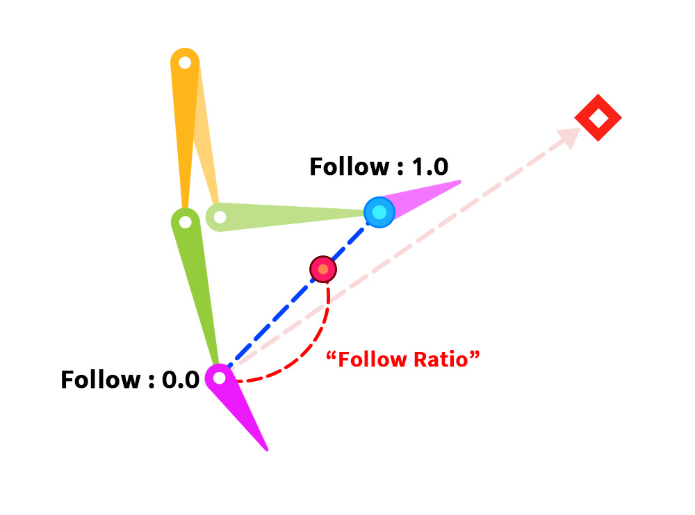
2段階では、1段階で求めた「Follow Point」を利用して、「Target Bone」がIKによって移動する最終的な位置が算出されます。
「Follow Point」とは、「Effector Bone」に最大限追従した場合の位置を意味します。
この際、「Follow Ratio」というオプションを使用して、「Follow Point」をどの程度適用するかを決定します。
つまり、「Follow Ratio」が0の場合、「Target Bone」は移動せず、その場で回転するだけとなります。
「Follow Ratio」が増加して1に近づくにつれて、「Target Bone」はより「Effector Bone」の方向へと移動するようになります。
また、2段階の完了時にはIKが実行されます。
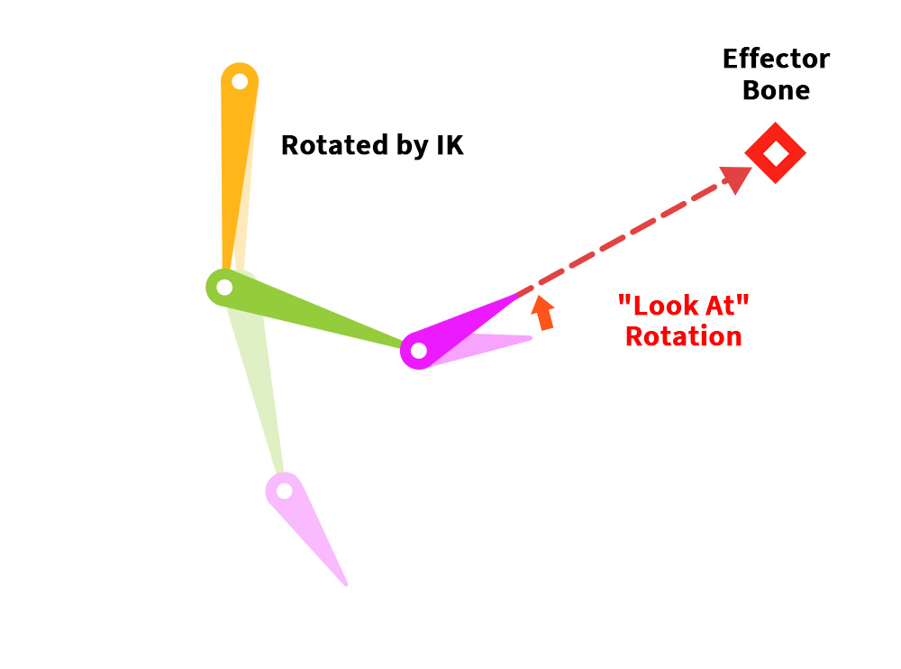
2段階が完了した時点では、IKの処理が行われ、IKチェーンのボーンが移動した状態になっています。
IKチェーンは「Effector Bone」に向かって動きましたが、まだ「Target Bone」は「Effector Bone」を完全には向いていません。
そこで3段階では、「Effector Bone」を向くように「Target Bone」だけをさらに少し回転させます。
それでは、各段階でどのようなオプションが活用されるのかを見ていきましょう。
「Target Bone」が「Effector Bone」に向かって可能な限り自然に移動する位置である「Follow Point」を求めることが、1段階の目標です。
「Follow Point」は「Effector Bone」の位置を初期値とし、状況に応じてその位置を調整します。
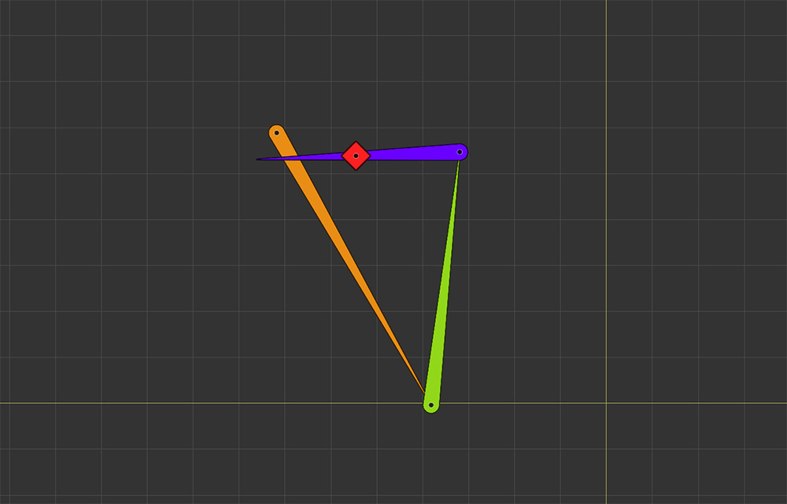
まず考慮すべき点は、「Effector BoneがHead Boneに近すぎる場合」です。
「Effector Bone」がIKチェーン、特にその始点である「Head Bone」に近いと、上記のように不自然な形状になりやすくなります。
そのため、近すぎる場合は、その点をある程度無視する必要があります。
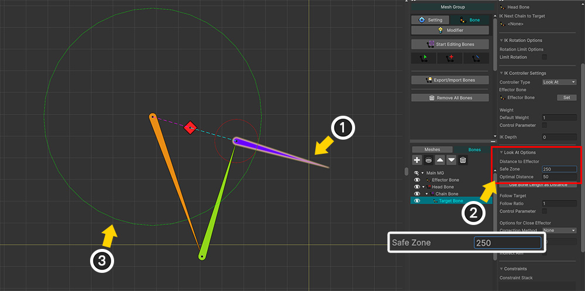
(1) IKコントローラーが適用された「Target Bone」を選択します。
(2) 「Safe Zone」オプションの値を大きくします。
(3) 「Head Bone」を中心に緑色の円がオプションに応じて大きくなり、それに伴って「Target Bone」が「Head Bone」の外側を向くようになるのが確認できます。
「Safe Zone」内に「Effector Bone」が入ると、「Follow Point」は「Effector Bone」が「Safe Zone」の外にあるものとして扱われるように設定されます。
そのため、上記のように「Target Bone」が「Safe Zone」の外側を向くようになるのです。
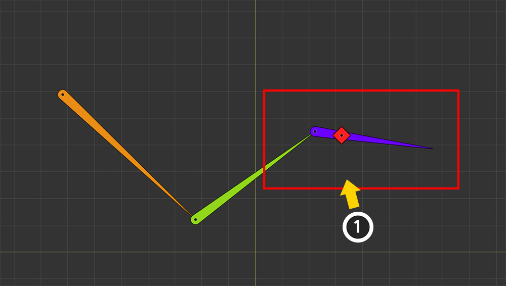
次に考慮すべき点は、「Target BoneとEffector Boneとの適正な距離」です。
「Look At」タイプと「Position」タイプのIKコントローラーの最大の違いは、「Target Boneの位置がEffector Boneと一致するように動くかどうか」という点です。
「Look At」IKコントローラーでは、「Target Bone」と「Effector Bone」を適切な距離だけ離しておく必要があります。
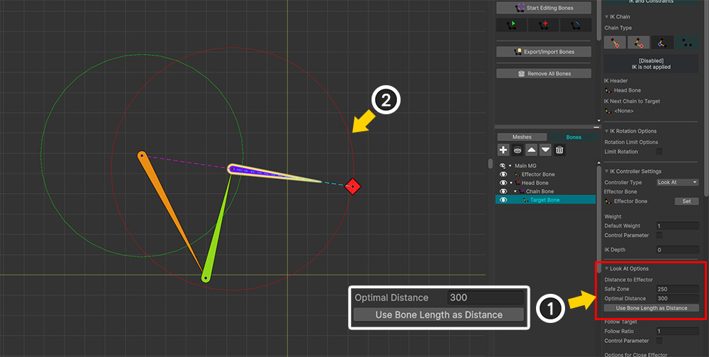
(1) 「Optimal Distance」オプションの値を変更します。（「Use Bone Length as Distance」ボタンを押すと、ボーンの形状に合わせた値が自動的に入力されます。）
(2) 入力した値に合わせて「Target Bone」の周囲に赤い円が描画され、「Target Bone」と「Effector Bone」がそのオプション値の分だけ離れる様子が確認できます。
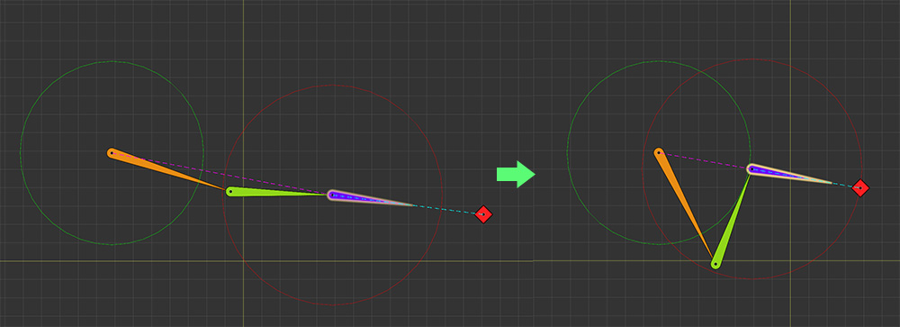
3つ目に考慮すべき点は、「Effector Bone」が近づいてきたときにIKチェーンがどのように動作するかということです。
1つ目のケースは「最小範囲」に関するものでしたが、ここで扱うのは「IKチェーンの全体的な形状」についてです。
上の画像からわかるように、「Effector Bone」はまだ「最小範囲（緑色の円）」の内側に入っていませんが、それにもかかわらず、IKチェーンの形状はかなり大きく変化しています。
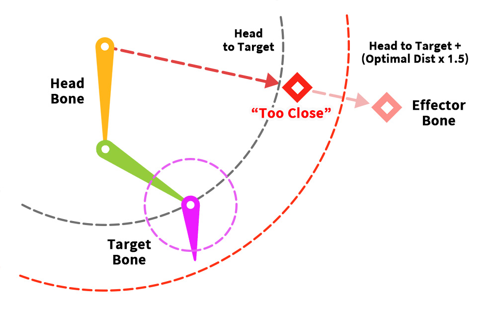
「Look At」IKコントローラーでは、「Effector Bone」と「Head Bone」の距離が次の値より小さい場合、「Effector Boneが十分に近づいた」と認識します。
「（Head BoneとTarget Boneの距離） + （Optimal Distanceの値 x 1.5）」
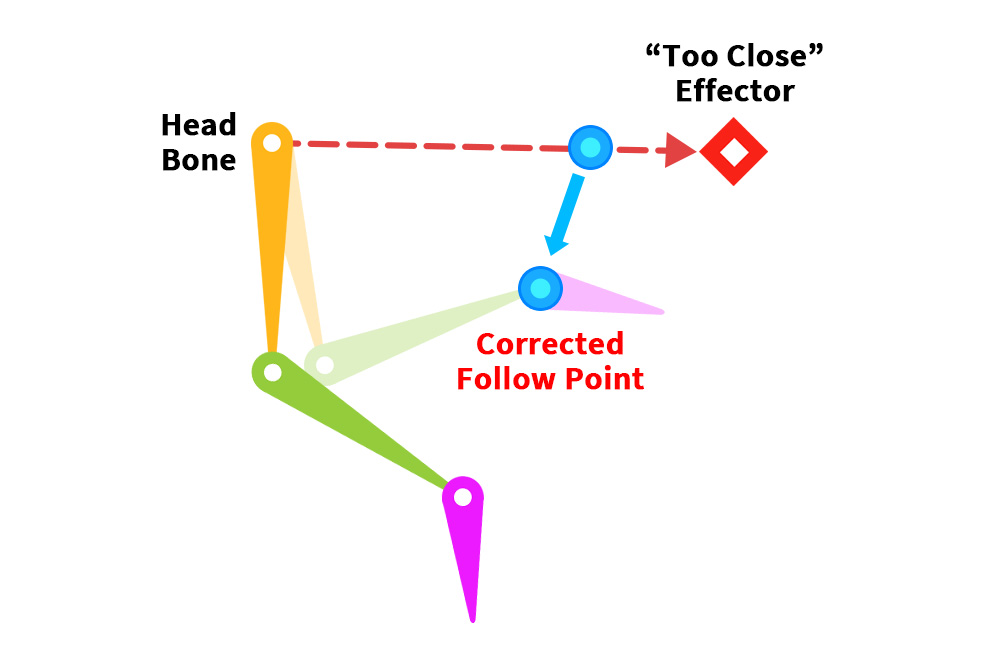
「Effector Bone」が近づいた状態になったら、「Follow Point」を少し動かし、IKによるポーズが自然に見えるように調整します。
「Effector Bone」が近づくほど、位置の補正がより強くかかるようになります。
「Follow Point」の移動の仕方を決定するために、以下のオプションが利用されます。
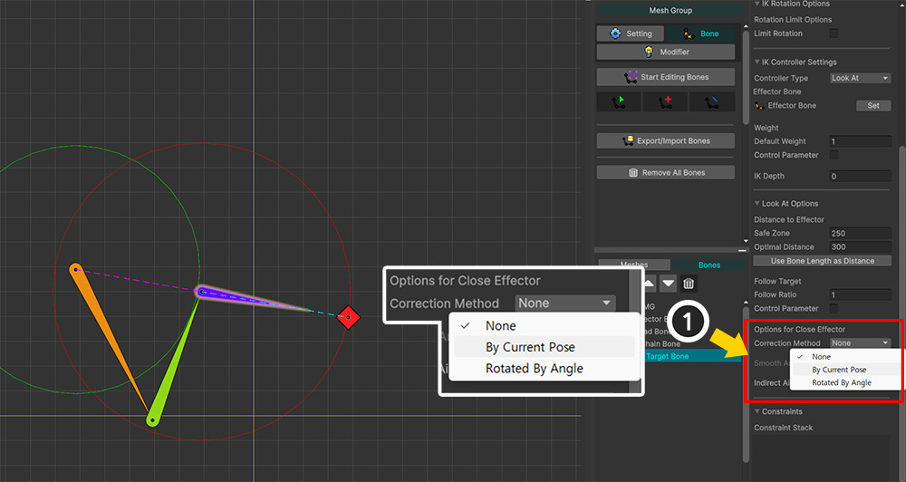
「Options for Close Effector」項目の「Correction Method」オプションに応じて、「Follow Point」の位置が調整される方式が決まります。
- None : 「Follow Point」を移動させません。
- By Current Pose : 「Look At」IKコントローラーが動作する直前のポーズを基準に、「Follow Point」を移動させます。
- Rotated By Angle : 「Head Bone」を基準に、入力された角度だけ回転させた位置を「Follow Point」とします。
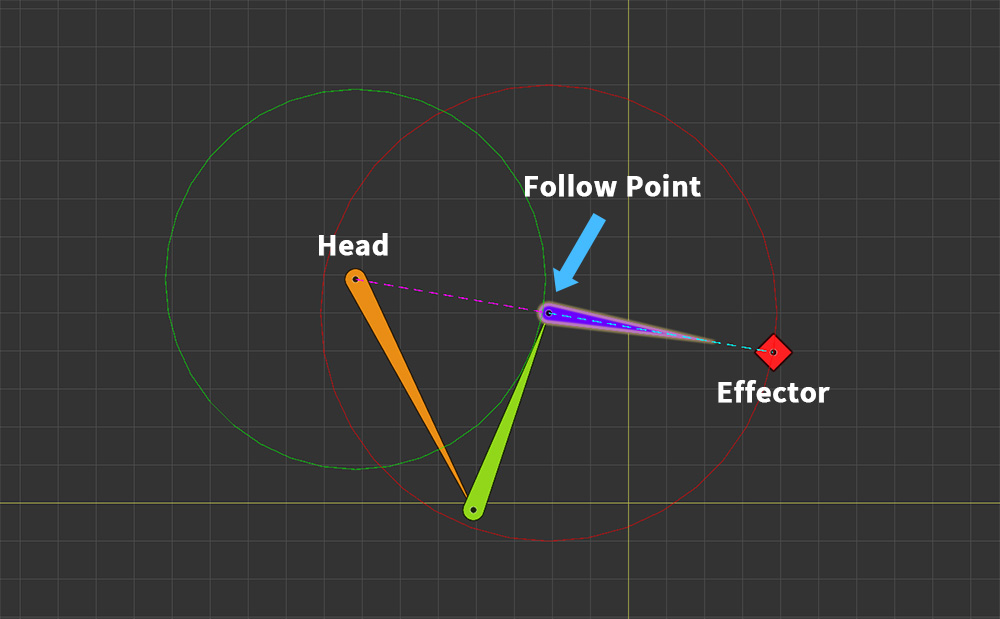
「Correction Method」を「None」に設定すると、上記のような結果になります。
基本的に「Follow Point」は、「Head BoneとEffector Boneを結ぶ線」上に位置します。
「Effector Bone」が近すぎる場合を除き、「None」方式では「Follow Point」が移動しないため、上記のように動作するのです。
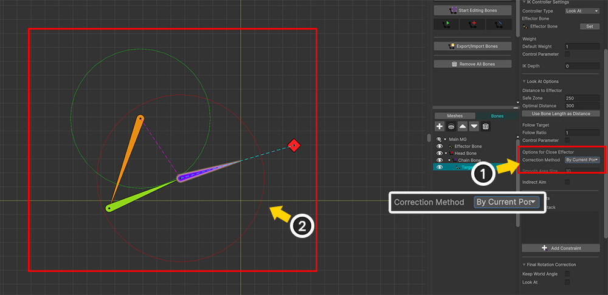
「Correction Method」を「By Current Pose」に設定すると、「Follow Point」が移動し、上記のようにIKの結果が変化します。
この方式は、「Look At」IKコントローラーが動作する直前（FKやそれ以前に動作したIKコントローラーなどを含む）のポーズを基準に動作します。
IKチェーンの「Target Bone」の方向へ「Follow Point」を移動させるため、より自然な結果が得られます。
アニメーション編集画面で、この方式がどのように動作するか確認してみましょう。
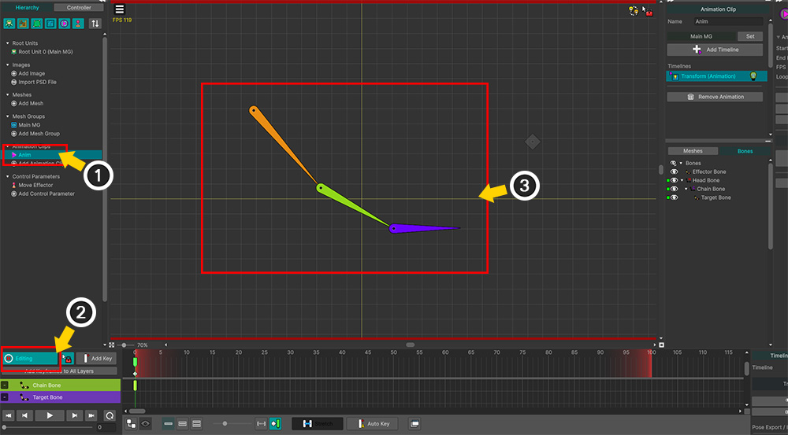
「アニメーションクリップ」を作成し、「アニメーション編集モード」を有効にした後、IKチェーンのボーンを適切に動かしてFKポーズを完成させます。
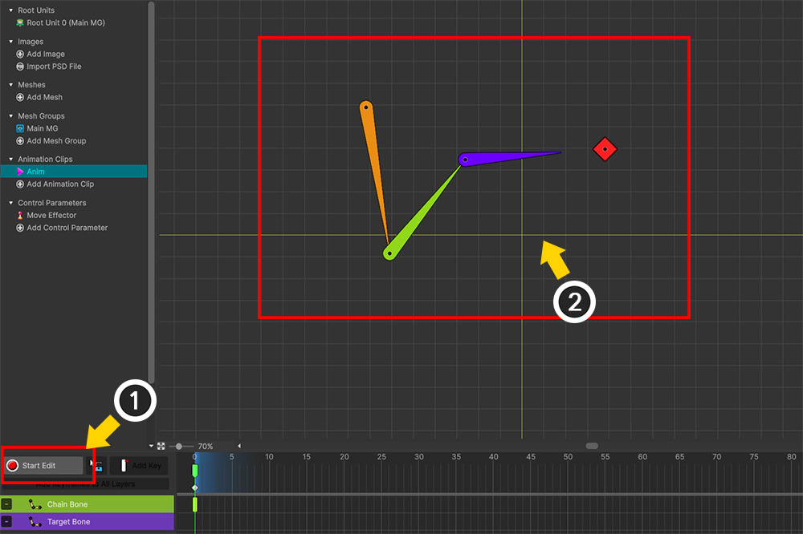
「アニメーション編集モード」をオフにすると、IKコントローラーが動作するようになります。
このとき、「Look At」IKコントローラーの結果を確認すると、IKチェーンの「Target Bone」が少し下側に位置した状態で「Effector Bone」を見ていることがわかります。
これは、FKで作成したポーズにおいて「Target Bone」が下側に位置していたためです。
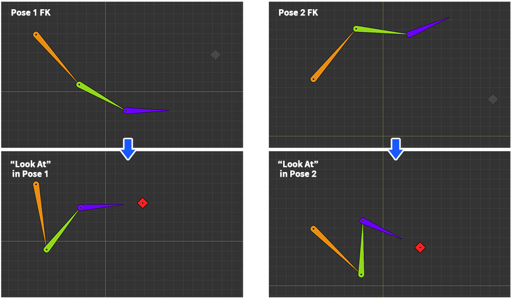
したがって、FKポーズを異なる設定にすると、「Look At」IKコントローラーは異なる結果を示します。
上の図を見ると、2つのポーズによって「Look At」IKコントローラーの結果が変わることがわかります。
特に、「Target Bone」が「Head BoneからEffector Boneを結ぶ線」よりも下側、あるいは上側に位置している点に注目してください。
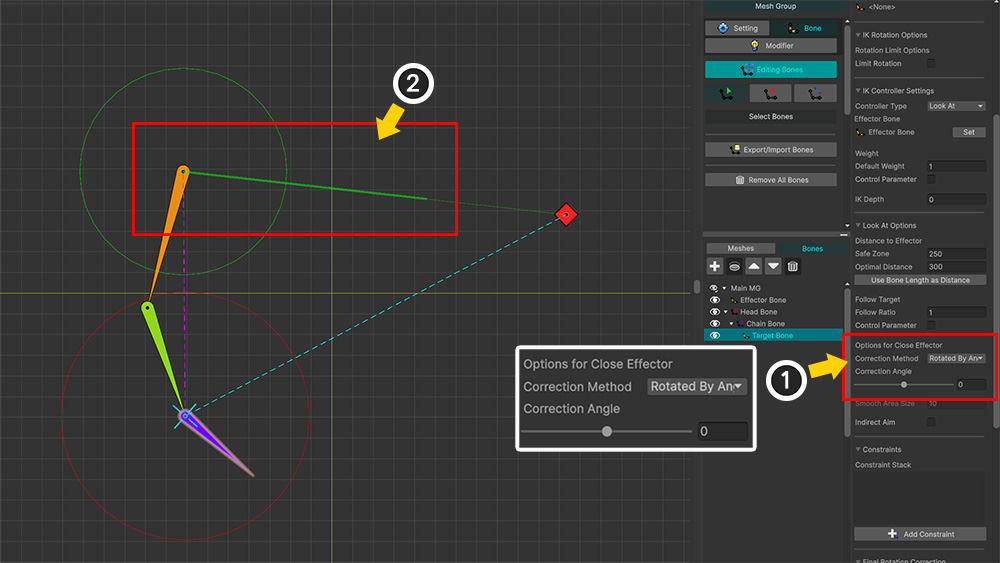
「Correction Method」を「Rotation By Angle」に設定すると、「Head Bone」を起点とする緑色のガイド線が追加で描画されるのが確認できます。
この緑色の線は、「Follow Point」の位置が補正される方向を示しています。
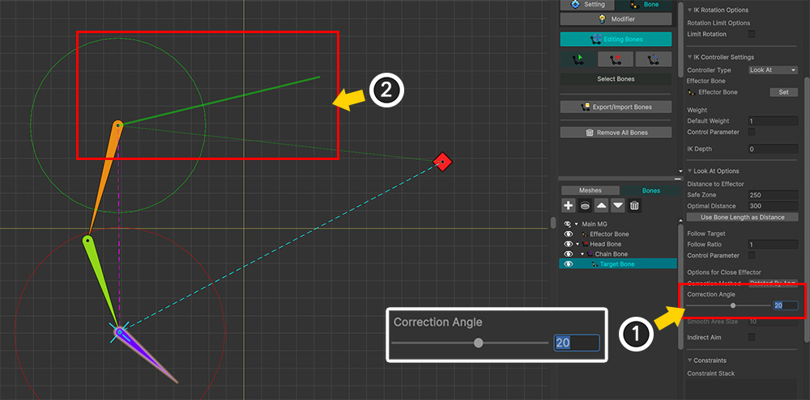
「Correction Angle」の値を変更すると、緑色のガイド線が「Head Bone」を基準に回転するのが確認できます。
「Head Bone」と「Effector Bone」を結ぶベクトル上に「Follow Point」が配置されますが、「Rotation By Angle」はこのベクトルを回転させることで、「Follow Point」の位置を調整します。
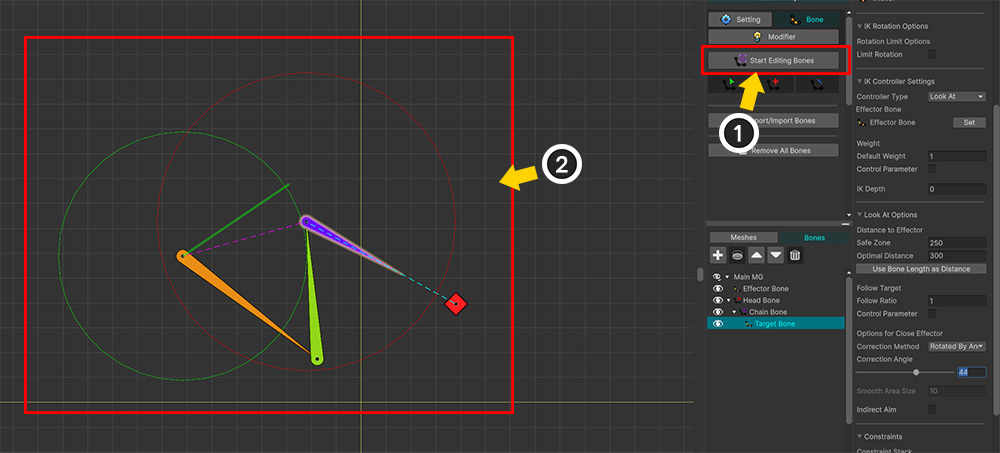
この状態で「ボーン編集モード」をオフにすると、「Look At」IKコントローラーが動作し、その結果を確認できます。
「Correction Angle」の値に応じて「Target Bone」が移動しますが、これは「Follow Point」がその分だけ移動したことを意味します。
メモ
「Follow Point」を移動させる際のオプション値は、「最大限に移動可能な状態での値」を意味します。
「Effector Bone」が離れると位置が調整される度合いが徐々に小さくなるため、実際には入力した値よりも移動量は少なくなります。
1段階で求めた「Follow Point」は、「Target BoneがEffector Boneに最大限追従した際の位置」です。
「Follow Point」をそのまま適用すると、IKチェーンのボーンが大きく動く傾向があります。
「Follow Point」の適用量を抑えれば、IKチェーンのボーンの動きは小さくなり、「Target Bone」だけが「Effector Bone」に向かって回転する様子が見られます。
つまり、「Follow Point」をどの程度適用するかによって、「Look At」IKコントローラーの結果が大きく変わるのです。
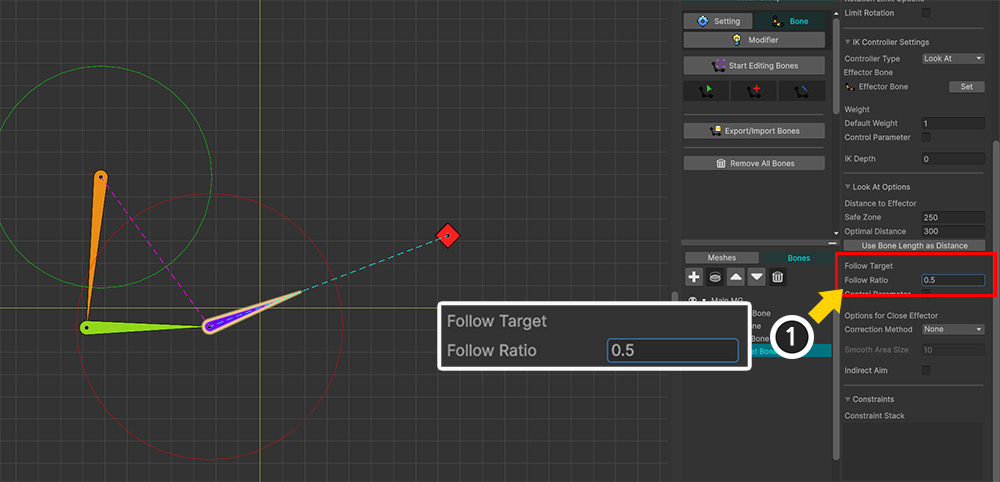
(1) 「Follow Target」項目の「Follow Ratio」オプションを使用すると、「Follow Point」の適用度合いを決定できます。
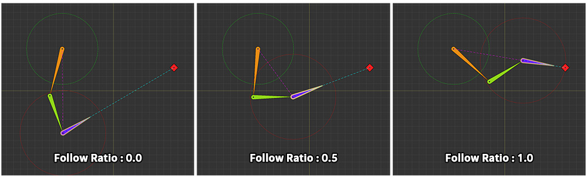
「Follow Ratio」は0から1の範囲の値を取り、その値に応じて上記のようにIKの結果が変化します。
「Follow Ratio」が0の場合、「Target Bone」のみが回転するため、後述する「単一ボーンLook At」と同じ結果になります。
「Follow Ratio」が1に近いほど、「Target Bone」が「Effector Bone」に向かって移動する様子が確認できます。
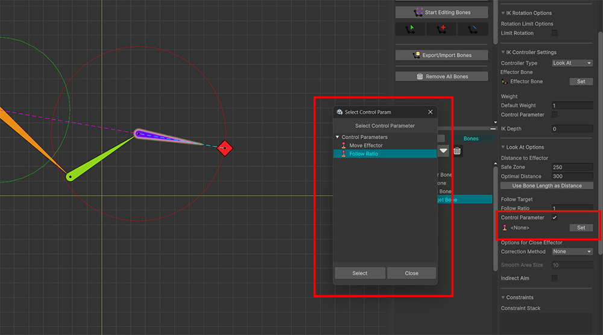
「Follow Ratio」の値は、「制御パラメータ」で制御することが可能です。
「Control Parameter」オプションを有効にした後、「Float型の制御パラメータ」を選択すると、リアルタイムで「Follow Ratio」を変更できます。
2段階が完了すると、IKが実行されます。
IKによってIKチェーンのボーンが移動しますが、IKの処理が終わった時点では、まだ「Target Bone」は「Effector Bone」を向いていない状態です。
そのため、3段階では「Target Bone」を「Effector Bone」の方向へ回転させる処理が行われます。
この際、IKチェーンの「Limit Rotation」オプションを利用すれば、「Target Bone」の回転を制限することが可能です。
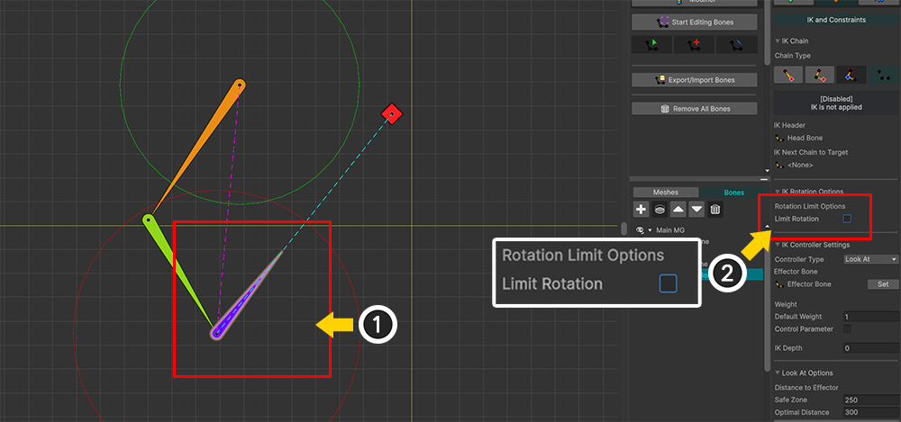
(1) 「Target Bone」を選択します。
(2) IKチェーンのオプションにある「Limit Rotation」を有効にしてみましょう。
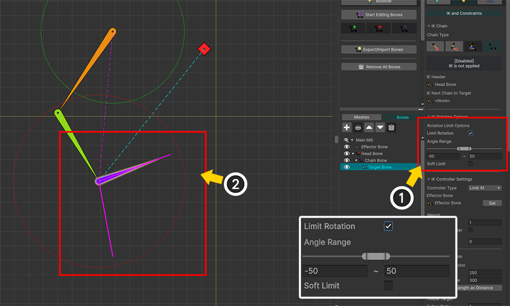
(1) 「Angle Range」の値を調整します。
(2) オプションによって、「Target Bone」の回転角度が制限されることが確認できます。
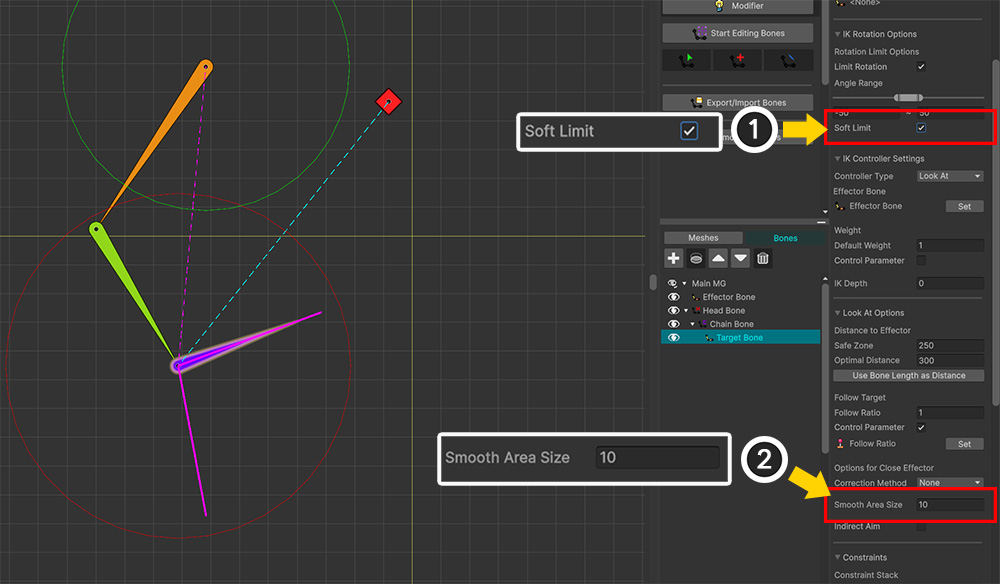
回転角度を滑らかに制限したい場合は、上記のオプションを使用します。
(1) 「Soft Limit」オプションを有効にします。
(2) 「Smooth Area Size」は、滑らかに制限がかかる角度の範囲です。この値を大きくすると、より広い角度領域で徐々に制限がかかるようになります。
「Target Bone」における「Soft Limit」は、次のように動作します。
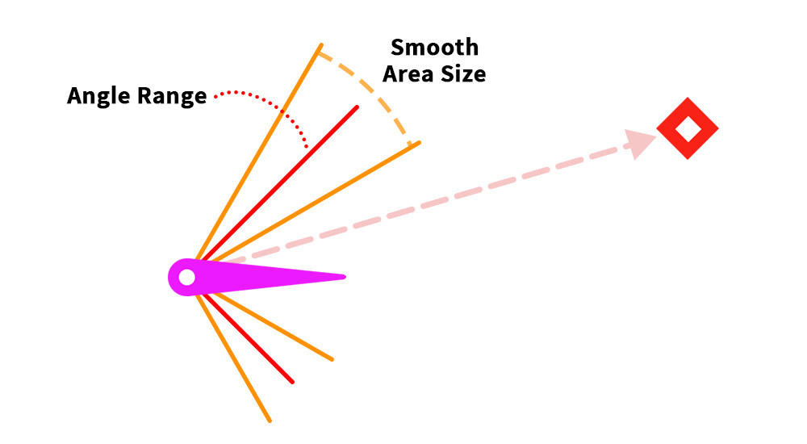
「Smooth Area Size」オプションの角度の分だけ、「Angle Range」の角度制限が緩和されます。
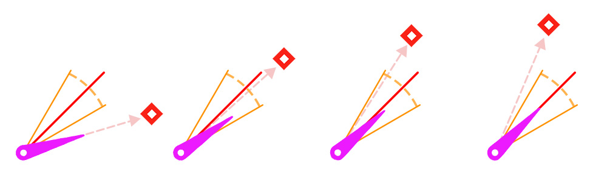
「Effector Bone」への角度が「Smooth Area」の範囲内に入ると、「Target Bone」は徐々に「Effector Bone」を「あまり見ない」ようになります。
「Effector Bone」への角度が「Smooth Area」の外側にある場合、「Target Bone」は「Angle Range」で設定した角度だけ回転して停止します。
3段階まで実行されると、「Look At」IKコントローラーの動作は完了します。
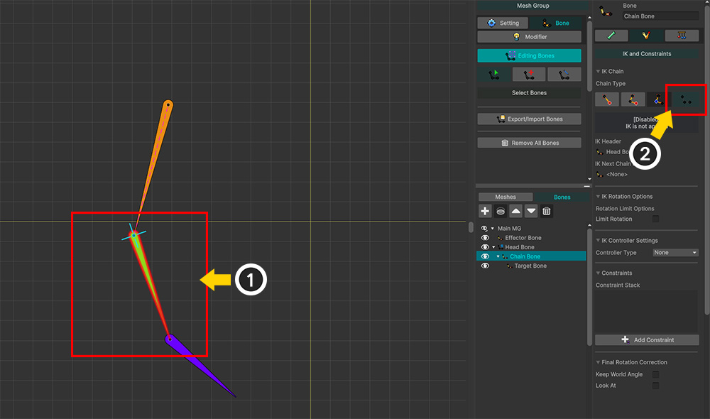
もし「IKチェーンに含まれていないボーン」に「Look At」IKコントローラーを適用した場合、IKの計算は行われず、単純な回転処理のみが実行されます。
(1) 親ボーンを選択します。
(2) 子ボーンへのIKチェーンを解除するか、あるいは対象外のボーンに対してIKチェーンを設定してみましょう。
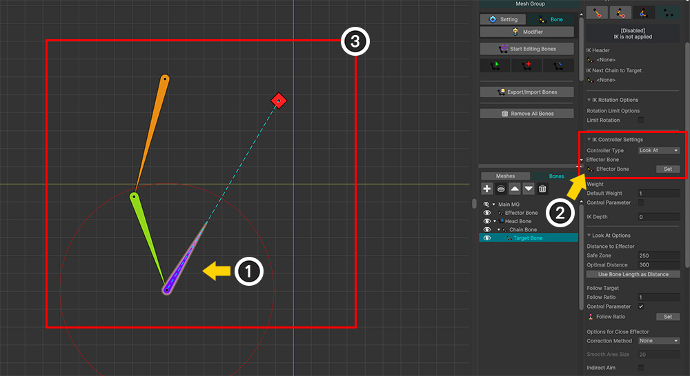
(1) IKを適用するボーンを選択します。
(2) 「Look At」IKコントローラーを設定します。
(3) IKチェーンがないため、ボーンが単独で回転し、「Effector Bone」の方を向く様子が確認できます。
IKチェーンにおいて「Target Bone（ターゲットボーン）がEffector Bone（エフェクターボーン）を向くようにする」のが、「Look At」IKコントローラーの役割です。
しかし、「Target Bone以外のボーンがEffector Boneを向くようにする場合」も当然あるでしょう。
「銃を構えた手」などがその典型的な例です。
本来なら「銃口」が照準点を向くべきですが、IKは「手」に適用されるため、正確ではない結果になってしまいます。
「銃」にIKチェーンを適用しようとしても、「銃」と「手」は固定されているため、IKが正しく動作しない可能性があります。
このような場合に使用されるオプションが「間接照準（Indirect Aim）」です。
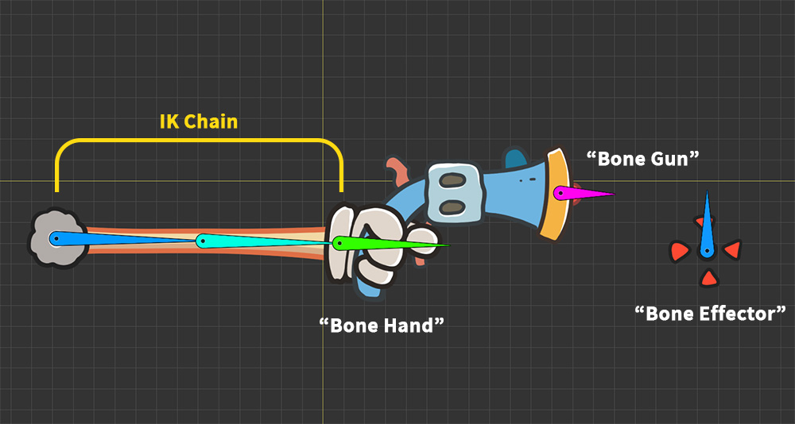
上記のような簡単な例を用意しました。
銃口に相当する「Bone Gun」が、IKチェーンのボーンである「Bone Hand」の子として接続された状態になっています。
そして、照準点に相当する「Bone Effector」を作成し、「Look At」のターゲットとなるように設定します。
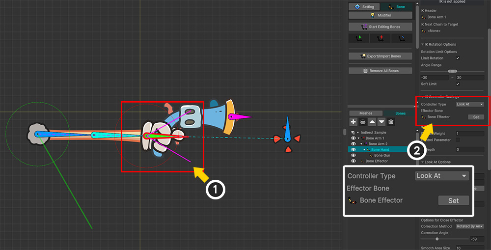
(1) 「Bone Hand」を選択します。
(2) 「Bone Effector」への「Look At」IKコントローラを設定します。
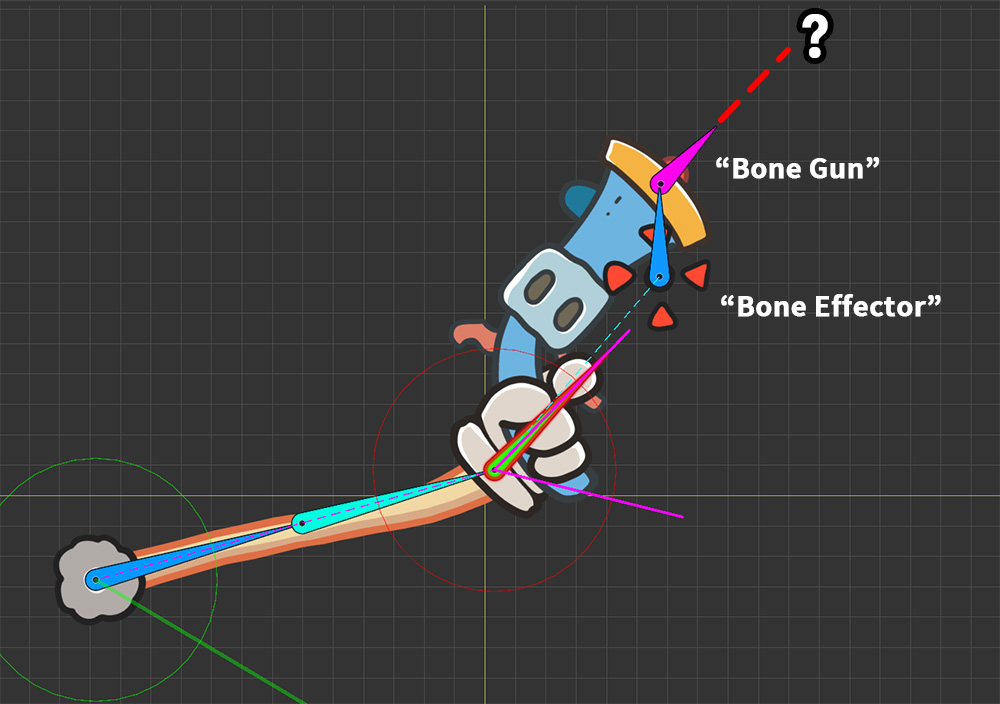
「Bone Effector」を動かしてみると、一見うまく動作しているように見えます。
しかし、よく見るとIKコントローラーが「Bone Gun」とは無関係に動作しているため、銃が対象を正確に狙えていない状態であることがわかります。
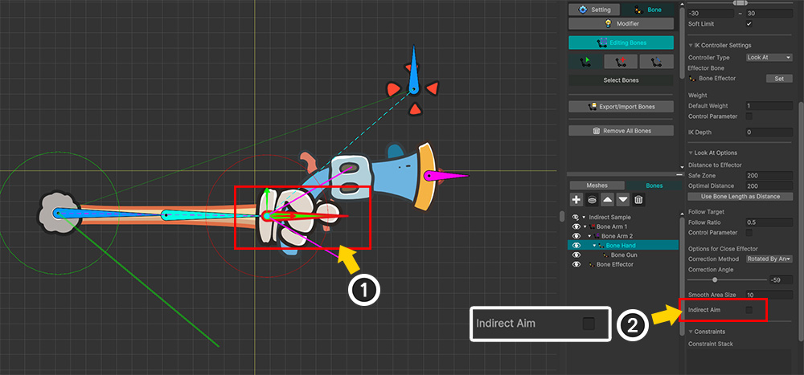
(1) 「Look At」IKコントローラーが適用された「Bone Hand」を再度選択します。
(2) 「Indirect Aim」オプションを有効にします。
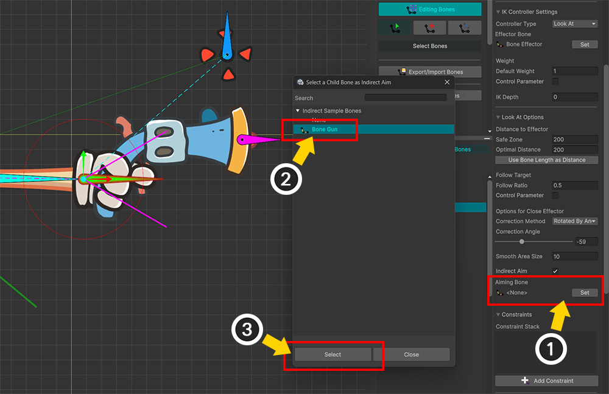
(1) 「Set」ボタンを押します。
(2) 「Bone Hand」の子ボーンが表示されます。ここで「Bone Gun」を選択します。
(3) 「Select」ボタンを押します。
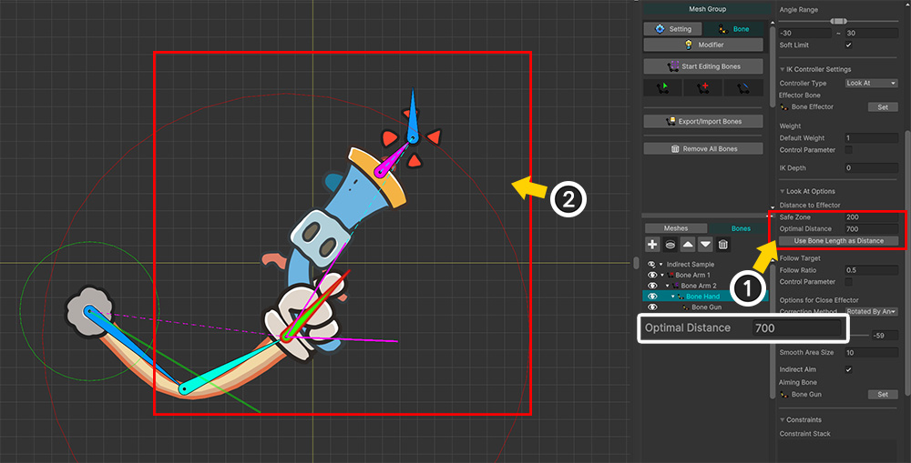
「Bone Gun」を基準に、「Bone Effector」との適正距離を再設定する必要があります。
(1) 「Optimal Distance」の値を大きく調整し、(2) 「Bone Gun」が赤い円の中に入るようにします。
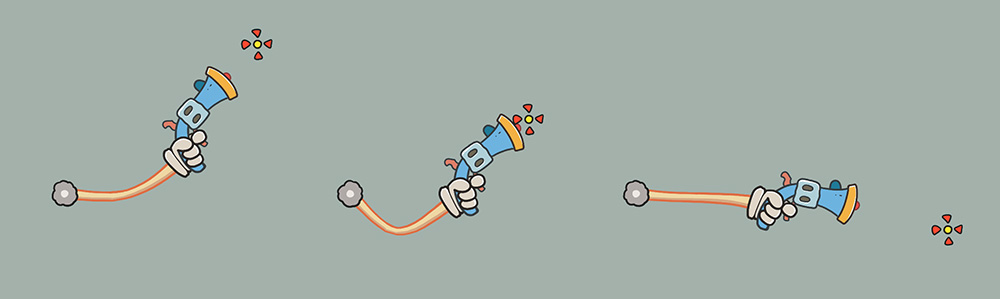
結果を確認してみると、手ではなく銃が対象を正確に照準していることがわかります。